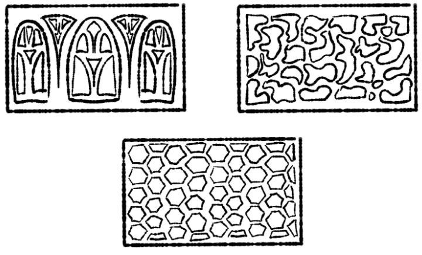
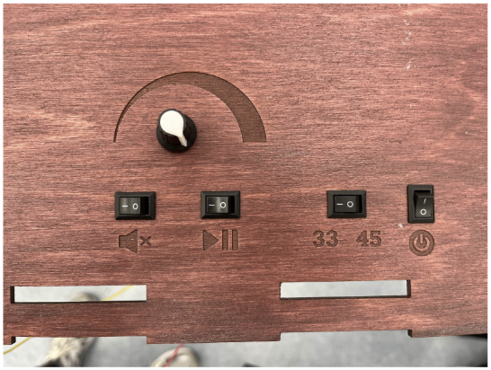
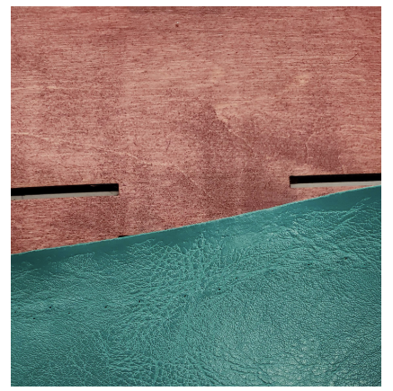

Box Design Description
The box's aesthetics was a key element in our design process. For sprint 1, the main decision we had to make for the design was the front panel of the lower box. This panel needed holes to allow the sound to pass through, and would decide the vibe of the box we were creating. After ideating, we had three main designs. A symmetrical pattern that would resemble a stained glass window, an organic pattern made of splines and a uniform honeycomb pattern. The group voted on which we liked best and the honeycomb ended up winning for its simplicity and even distribution of holes. We were worried that the other options with uneven holes would create problems with the sound. Rough sketches of front details are pictured below:
Sprint two had fewer design decisions involved, the largest was picking the color of the stain and leather. Real leather was out of our budget, but we wanted that look and found some nice teal vinyl to cover the outside. We all collectively decided we liked the bright color, but still wanted to keep the box classy, so we picked out what we thought was a rich brown color for the stain. The only other decision we made during this sprint was the positioning of the display screen. We ended up having the display on the right side of the box to ensure it wouldn’t interfere with the turntable.
Sprint three had more design decisions especially when it came to the UX layout of the buttons. We were originally going to have four buttons and one volume knob. The buttons were going to be for mute, pause/play, record speed, and power. We tested several button layouts and got our whole team to test which felt the most natural. We checked the layout by creating cardboard testing buttons and allowing each person to give us unprompted feedback on their positioning.
Unfortunately after we had figured out the correct layout (pictured below), two of the buttons stopped working, and to ensure the UX was still intuitive we covered the buttons with leather.
The other issue we ended up having in this sprint was that our stain turned out way more purple than we expected. It ended up clashing with our teal leather horribly.
To fix this, we ended up grabbing black vinyl leather and using that instead.